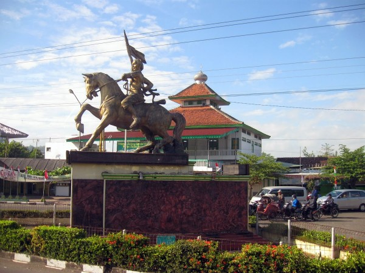
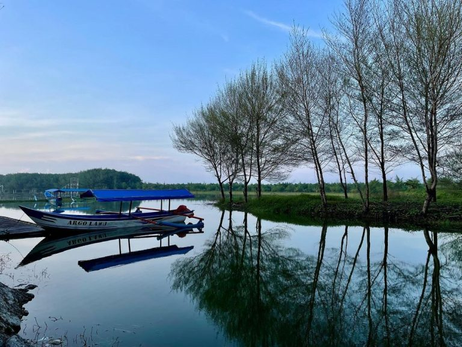
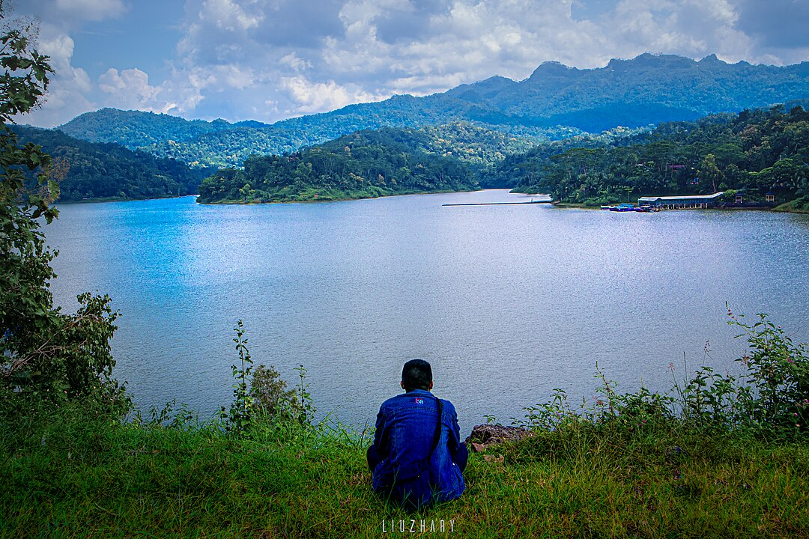

Sejarah

Asal usul nama Kulon Progo berasal dari kata "kulon," yang berarti barat, dan "progo," yang merujuk
pada
Sungai Progo yang mengalir melalui daerah ini. Sungai ini memiliki peranan penting dalam kehidupan
masyarakat setempat, baik dari segi pertanian maupun transportasi. Sejarah mencatat bahwa Kulon
Progo telah
menjadi tempat pertemuan berbagai budaya, termasuk budaya Jawa dan Islam, yang saling mempengaruhi
dan
membentuk identitas daerah ini.
Selain itu, Kulon Progo juga memiliki sejarah panjang sebagai daerah yang terlibat dalam pergerakan
kemerdekaan Indonesia. Pada masa penjajahan, masyarakat Kulon Progo berperan aktif dalam berbagai
perlawanan
terhadap penjajah, termasuk dalam peristiwa-peristiwa penting yang terjadi di wilayah Yogyakarta.
Geografis

Terletak di sebelah barat Yogyakarta, Kabupaten Kulon Progo dikelilingi oleh pegunungan yang
menambah
keindahan lanskapnya. Dengan ketinggian yang bervariasi antara 0 hingga 1.000 meter di atas
permukaan laut,
kabupaten ini memiliki daerah dataran rendah di selatan dan pegunungan di utara. Sungai Progo dan
anak-anak
sungainya mengalir di wilayah ini, memberikan kesuburan bagi lahan pertanian dan menjadi sumber
kehidupan
bagi masyarakat.
Kondisi geografis Kulon Progo yang berbukit dan berlembah juga menciptakan berbagai mikroklimat yang
mendukung beragam jenis flora dan fauna. Di daerah pegunungan, terdapat hutan tropis yang lebat,
sementara
di dataran rendah, masyarakat mengembangkan lahan pertanian yang subur. Tanaman seperti padi,
jagung, dan
berbagai sayuran menjadi komoditas utama yang dihasilkan dari daerah ini.
Wisata
Kulon Progo menawarkan berbagai destinasi wisata yang menarik, mulai dari alam hingga budaya. Banyak
pengunjung yang datang untuk menikmati keindahan alam dan merasakan pengalaman budaya lokal yang
kaya.
Desa Wisata Kalibiru

Desa Wisata Kalibiru menawarkan pengalaman wisata yang berbeda dengan pemandangan alam yang
spektakuler.
Terletak di kawasan perbukitan, pengunjung dapat menikmati pemandangan Waduk Sermo dan hutan
yang hijau.
Aktivitas yang ditawarkan di sini termasuk trekking, berfoto di spot-spot menarik, dan menikmati
suasana
alam yang tenang.
Waduk Sermo

Waduk Sermo adalah salah satu waduk terbesar di Yogyakarta yang terletak di Desa Hargowilis,
Kokap. Selain
berfungsi sebagai sumber irigasi, waduk ini juga menawarkan pemandangan yang indah dan suasana
yang tenang.
Pengunjung dapat menikmati aktivitas seperti berperahu, memancing, atau sekadar bersantai di
tepi waduk
sambil menikmati panorama alam yang menakjubkan.